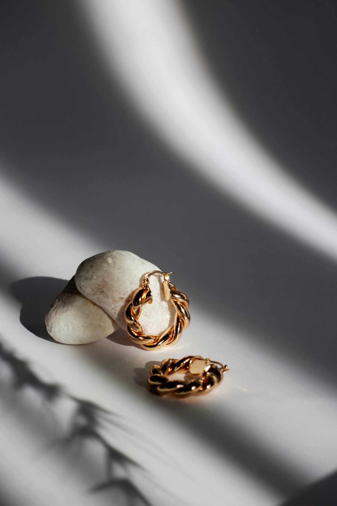
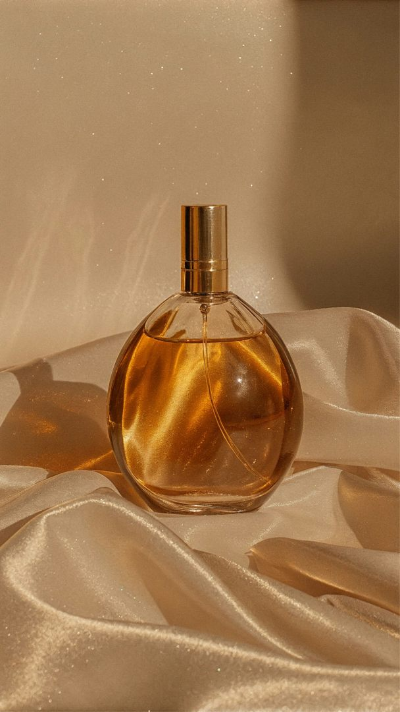
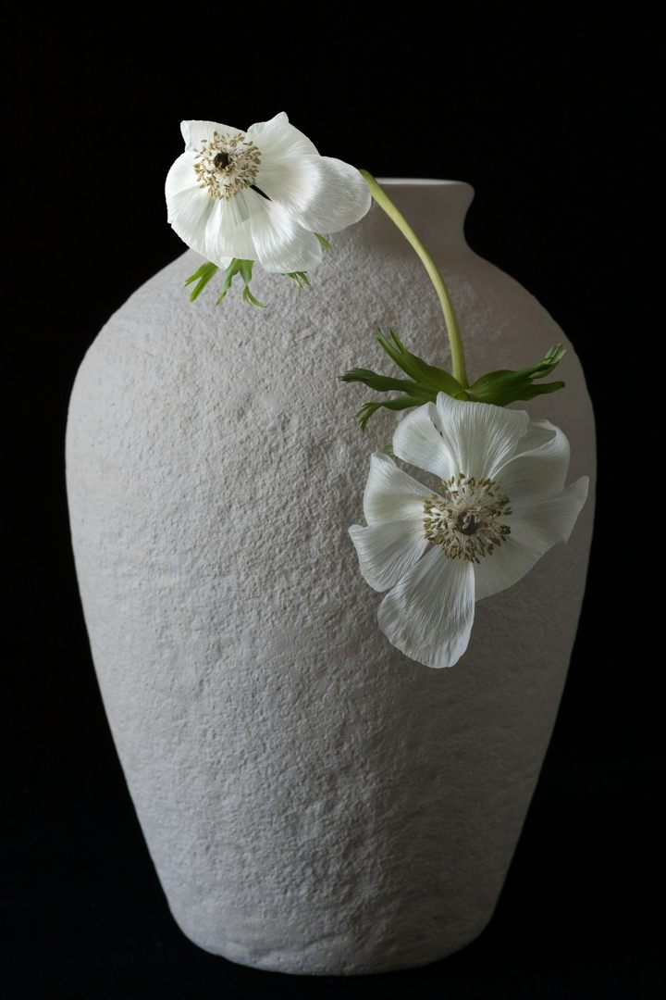

NOTE / 03 BRANDS & OBJECTS
One idea. Many images.
A brand needs more than a single beautiful photograph. It needs a group of images that belong in the same conversation.

Find the idea the product can carry.
Begin with the qualities you want people to notice. Is the object precise, playful, tactile, everyday, or ceremonial? Those qualities can guide the surface underneath it, the space around it, and the way the light describes it. A visual direction becomes easier to judge when it is connected to something specific about the product.
For a piece of jewellery, that might mean the relationship between a polished surface and a rough stone. For skincare, it might be the contrast between clean packaging and the texture of the product itself. The supporting materials should help the object say something.
01 / LET THE MATERIAL SET THE TONE



Two objects, two atmospheres. Tonal whites suggest softness and touch; amber glass and satin create warmth. In each, the supporting material helps tell the story.
Make a small set of shared decisions.
Choose a palette, a lighting character, and an approach to composition. You might work with warm neutrals, directional shadows, and generous space. Or saturated colour, even light, and a closer crop. These decisions give the images a family resemblance before a logo is added.
A consistent direction still allows variety. Change the scale of the object, move closer to a detail, introduce a hand, or show the product in use. Keep enough of the visual language in common that each new frame feels like another sentence in the same story.
02 / A SMALL VISUAL LANGUAGE

Glazed green, warm orange, and a vermilion background. A few repeated decisions can give an image family its character.
Consistency comes from shared decisions, not from making every frame the same.
A NOTE FROM FORME
Give each photograph a job.
Plan a small image family around the places the brand needs to appear. A hero image can establish the feeling. A detail can explain a material or finish. A useful product view can make shape and proportion clear. A contextual frame can suggest how the object belongs in someone’s life.
Include both wide and vertical compositions if the work will cross a website, social channels, and print. Leave space for copy where it is needed. Thinking about these uses before the shoot helps avoid asking a single photograph to solve every layout.
03 / AN IMAGE WITH ROOM TO BREATHE


A contextual frame can show the relationship between an object and its surroundings. Here, the fine line of an orchid contrasts with the weight of the vessel.
Review the collection as a collection.
Lay the selects out together. Does the light feel related? Are the colours working as a group? Is there a useful balance of close views and breathing room? A photograph can be strong by itself and still feel out of place in a particular sequence.
Look for gaps as well as favourites. You may have several beautiful hero options but no image that shows the product clearly at a smaller size. The final edit should have range and purpose, with enough consistency that the brand feels present from one frame to the next.
An original studio note for the FORME website concept. Explore the visual directions or meet the photographers in the image credits.